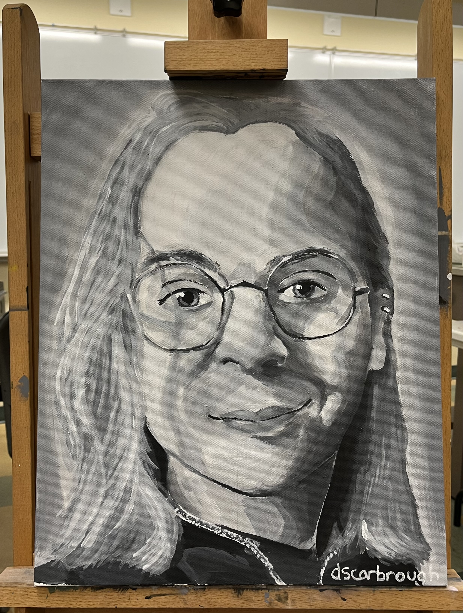

About Me

My name is Daniel Scarbrough, and I am a 2025 electrical engineering graduate. I was born and raised in Arkansas, educated in Texas at LeTourneau University, and am eager to continue to travel and see new places.
I am passionate about control systems and embedded firmware, particularly when combined with automation and robotics. I have been pursuing these interests since high school, where I took two years of online engineering
courses. During these two years, I learned the basics of 3D CAD modeling and electronic design.
I graduated from LeTourneau University with a concentration in mechatronics and a minor in computer science and mathematics, giving me a wide understanding of programming, kinematics, and circuitry. My personal favorite
project is the machine vision system I designed for my senior design project, where I used YOLO computer vision to track and estimate golf ball positions in real time.
While I am not working with electronics or software, I enjoy creative arts, particularly drawing and painting. I often spend time at home with my family and my fluffy goldendoodle.
Homepage